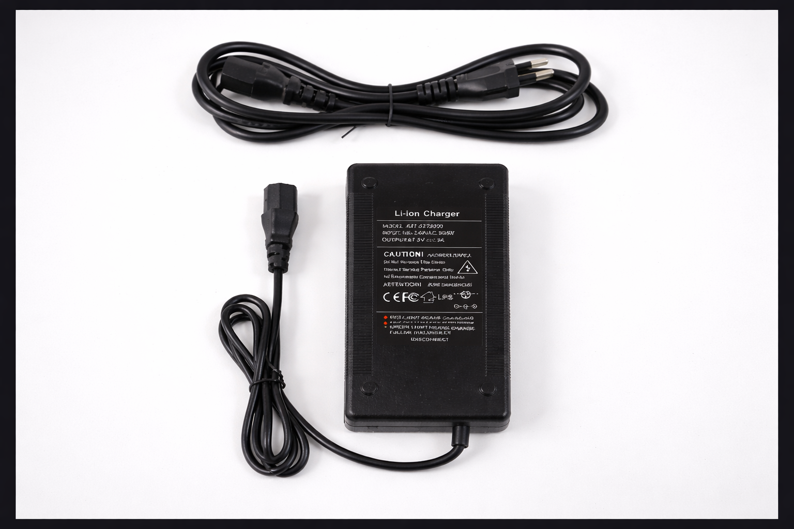

Carregador para Bateria Li-ion 67.2V 3A
Carregador automático desenvolvido para packs de bateria de íon-lítio 60V, com saída de 67.2V a 3A. Carregamento estável, proteção completa e indicador LED de status. Ideal para bicicletas elétricas, scooters e sistemas de mobilidade elétrica.

Carregador 67.2V 3A
Carregamento Seguro e Estável para Packs Li-ion 60V
 Importado pela Overcel · Modelo SJT-6723000
Importado pela Overcel · Modelo SJT-6723000
Carregador automático para packs de bateria Li-ion com tensão nominal de 60V e tensão final de carga de 67.2V. Com controle automático de corrente e tensão, garante um ciclo de carregamento seguro e eficiente, encerrando automaticamente ao atingir a carga completa. Compatível com entrada universal 100–240V AC.
Especificações Técnicas
- Modelo: SJT-6723000
- Entrada: 100–240V AC | 50/60Hz
- Saída: 67.2V DC – 3A
- Tipo: Carregador automático para Li-ion
- Indicador LED: Vermelho (carregando) / Verde (completo)
- Proteção contra sobrecarga
- Proteção contra curto-circuito
- Proteção contra sobretensão
- Cabo de alimentação AC incluso
- Origem: Made in China
O Carregador Li-ion 67.2V 3A (modelo SJT-6723000) é desenvolvido para o carregamento seguro e eficiente de packs de bateria de íon-lítio com tensão nominal de 60V. Com saída de 67.2V DC a 3A, garante que a bateria seja carregada até sua tensão final ideal, prolongando a vida útil das células.
O sistema de controle automático de corrente e tensão monitora continuamente o processo de carregamento, ajustando os parâmetros para garantir máxima segurança e eficiência. O carregador encerra automaticamente o processo ao detectar que a bateria atingiu a carga completa, evitando sobrecarga.
A carcaça resistente com dissipação térmica garante operação segura mesmo em uso contínuo, enquanto o indicador LED de duas cores oferece visualização clara do status: vermelho durante o carregamento e verde quando a carga está completa. Compatível com entrada universal 100–240V AC, pode ser utilizado em qualquer tensão de rede.
O carregador 67.2V 3A é indicado para uso com packs de bateria Li-ion 60V em:
- Baterias 60V 20Ah para veículos elétricos
- Bicicletas elétricas com bateria 60V
- Scooters elétricas com bateria 60V
- Patinetes elétricos de alta potência
- Veículos leves de mobilidade urbana
- Projetos DIY com packs Li-ion 60V
Atenção: Utilize apenas com baterias que possuam tensão final de carga de 67.2V. O uso com baterias incompatíveis pode causar danos ao equipamento e riscos de segurança.
Como Utilizar
Para obter os melhores resultados e garantir segurança no carregamento:
- Verificação: Confirme que a bateria é compatível com tensão final de carga de 67.2V antes de conectar
- Conexão da bateria: Conecte o conector DC do carregador à entrada de carregamento da bateria
- Conexão à rede: Conecte o cabo AC a uma tomada 100–240V
- Monitoramento: O LED vermelho indica que o carregamento está em andamento
- Carga completa: O LED verde indica que a bateria está completamente carregada
- Desconexão: Desconecte primeiro o cabo AC e depois o conector da bateria
Indicador LED
- Luz Vermelha: Carregamento em andamento
- Luz Verde: Carga completa — pode desconectar
Dicas Importantes
- Não deixe o carregador conectado à bateria por longos períodos após a carga completa
- Utilize em local ventilado para facilitar a dissipação de calor
- Não cubra o carregador durante o uso
- Verifique regularmente o cabo e o conector para identificar danos
Avisos Importantes de Segurança
AVISO: O usuário deve ter conhecimento adequado sobre manuseio de equipamentos elétricos e baterias de lítio de alta tensão.
- Use exclusivamente com baterias Li-ion compatíveis com tensão final de carga de 67.2V.
- Não utilize com baterias danificadas, deformadas ou com vazamentos.
- Não desmonte, modifique ou tente reparar o carregador.
- Mantenha fora do alcance de crianças.
- Não utilize em ambientes úmidos ou exposto à água.
- Em caso de odor anormal, fumaça ou superaquecimento, desconecte imediatamente.
- Utilize em local ventilado — não cubra o carregador durante o uso.
- Verifique regularmente o cabo e o conector; substitua se apresentar danos.
- Não dobre ou prenda o cabo de alimentação.
- Aguarde o carregador esfriar antes de armazená-lo.
- Armazene em local seco, longe de calor excessivo e luz solar direta.
- Em caso de dúvidas técnicas, consulte um especialista.
Características do Produto
Especificações técnicas do Carregador Li-ion 67.2V 3A
| Característica | Especificação |
|---|---|
| Modelo | SJT-6723000 |
| Entrada | 100–240V AC | 50/60Hz |
| Saída | 67.2V DC – 3A |
| Tipo | Carregador automático Li-ion |
| Indicador LED | Vermelho (carregando) / Verde (completo) |
| Proteções | Sobrecarga, curto-circuito, sobretensão, térmica |
| Cabo AC | Incluso |
| Origem | Made in China |
| Compatibilidade | Packs Li-ion 60V (carga final 67.2V) |
Utilize exclusivamente com baterias Li-ion cuja tensão final de carga seja 67.2V. Compatível com o Pack de Bateria 60V 20Ah HaoYang.